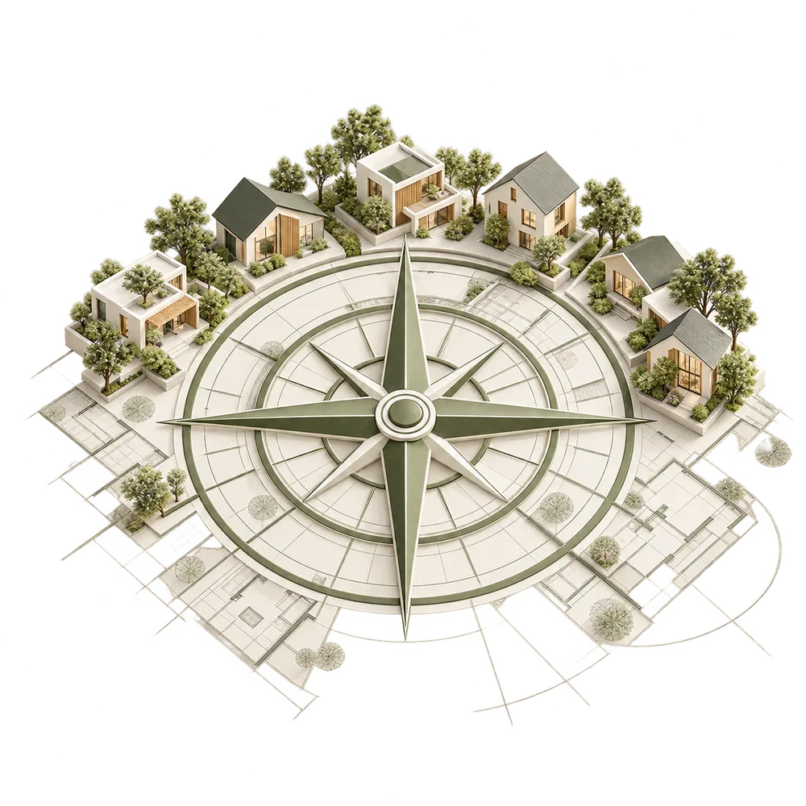
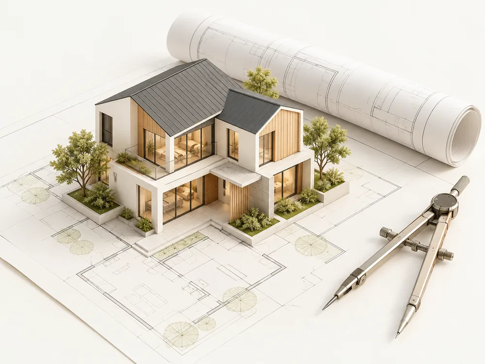
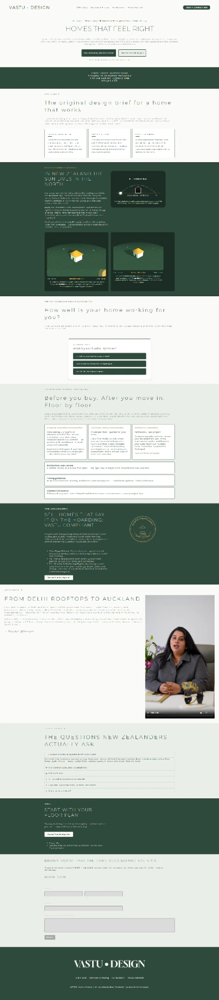

Property selection
Apply Indian Vastu considerations early, while you search for a New Zealand property.
Enquire about property selectionAuckland · New Zealand ◆
Indian Vastu Shastra for the Southern Hemisphere
Indian Vastu Shastra is a traditional approach to architecture, orientation and living spaces. At Vastu Design, its principles are applied faithfully and practically to New Zealand homes, taking account of the Southern Hemisphere sun, local conditions and the way you live.
Discover our approach
Rooted in India. Considered for New Zealand.
Our approach

Indian Vastu Shastra brings together the relationship between a home, its directions, its elements and the people who live within it. We interpret those traditional principles for New Zealand properties, with practical advice shaped by the Southern Hemisphere and your everyday needs.
Invite daylight into everyday living.
Consider the sun and your surroundings.
Create spaces that flow naturally.
Design around the way you live.
Designed for the Southern Hemisphere
Traditional Indian principles, considered for light, orientation and layout in New Zealand homes.
A place to begin
A quick way to reflect on what is working in your home and where Indian Vastu may suggest opportunities for change.
Ways we can help
Every consultation is practical and precise: what to refine, why, and in what order. We work with the New Zealand home you have and the plans you are considering, while keeping Indian Vastu principles at the centre.
Apply Indian Vastu considerations early, while you search for a New Zealand property.
Enquire about property selection
A detailed, room-by-room Indian Vastu review of your current home.
Enquire about a home consultation
Bring Indian Vastu into your renovation plans for a home that works even better.
Enquire about your renovationFor New Zealand residential projects
Bring considered Indian design principles into your next residential project.
Our story
A personal perspective on bringing Indian tradition into the places we call home.
Indian Vastu foundations and a New Zealand context meet in the way we consider a home: its directions, its light, its layout and the people at its centre.
Start a conversation
Your Vastu questions, answered
Let’s talk about your New Zealand home
Tell us about your home and what you would like to understand or improve through Indian Vastu.
A considered home begins with a conversation.